List of sovereign states

The following is a list providing an overview of sovereign states around the world with information on their status and recognition of their sovereignty.
The 206 listed states can be divided into three categories based on membership within the United Nations System: 193 UN member states,[1] 2 UN General Assembly non-member observer states, and 11 other states. The sovereignty dispute column indicates states having undisputed sovereignty (188 states, of which there are 187 UN member states and 1 UN General Assembly non-member observer state), states having disputed sovereignty (16 states, of which there are 6 UN member states, 1 UN General Assembly non-member observer state, and 9 de facto states), and states having a special political status (2 states, both in free association with New Zealand).
Compiling a list such as this can be a complicated and controversial process, as there is no definition that is binding on all the members of the community of nations concerning the criteria for statehood. For more information on the criteria used to determine the contents of this list, please see the criteria for inclusion section below. The list is intended to include entities that have been recognized as having de facto status as sovereign states, and inclusion should not be seen as an endorsement of any specific claim to statehood in legal terms.
Criteria for inclusion
The dominant customary international law standard of statehood is the declarative theory of statehood, which was codified by the Montevideo Convention of 1933. The Convention defines the state as a person of international law if it "possess[es] the following qualifications: (a) a permanent population; (b) a defined territory; (c) government; and (d) a capacity to enter into relations with the other states" so long as it was not "obtained by force whether this consists in the employment of arms, in threatening diplomatic representations, or in any other effective coercive measure".[2]
Debate exists on the degree to which recognition should be included as a criterion of statehood. The declarative theory of statehood argues that statehood is purely objective and recognition of a state by other states is irrelevant. On the other end of the spectrum, the constitutive theory of statehood defines a state as a person under international law only if it is recognized as sovereign by other states. For the purposes of this list, included are all polities that consider themselves sovereign states (through a declaration of independence or some other means) and either:
- are often regarded as satisfying the declarative theory of statehood, or
- are recognized as a sovereign state by at least one UN member state
In some cases, there is a divergence of opinion over the interpretation of the first point, and whether an entity satisfies it is disputed. Unique political entities which fail to meet the classification of a sovereign state are considered proto-states.[3][4]
On the basis of the above criteria, this list includes the following 206 entities:[a][b]
- 203 states recognized by at least one UN member state
- 2 states that satisfy the declarative theory of statehood and are recognized only by non-UN member states
- 1 state that satisfies the declarative theory of statehood and is not recognized by any other state
The table includes bullets in the right-hand column representing entities that are either not sovereign states or have a close association to another sovereign state. It also includes subnational areas where the sovereignty of the titular state is limited by an international agreement. Taken together, these include:
- Entities that are in a free association relationship with another state
- 2 entities controlled by Pakistan which are neither sovereign states, dependent territories, nor part of another state: Azad Kashmir and Gilgit-Baltistan
- Dependent territories of another state, as well as areas that exhibit many characteristics of dependent territories according to the dependent territory page
- Subnational entities created by international agreements
List of states
UN member states and General Assembly observer states
|
"Membership within the UN System" column legend UN member state
UN General Assembly observer state
|
"Sovereignty dispute" column legend Undisputed sovereignty
Disputed sovereignty
|
| Common and formal names | Membership within the UN System[c] | Sovereignty dispute[d] | Further information on status and recognition of sovereignty[f] |
|---|---|---|---|
| Afghanistan | UN member state | None | The de facto ruling government, the Islamic Emirate of Afghanistan, has not been recognized by any state. The United Nations continues to recognize the |
| Albania Republic of Albania | UN member state | None | |
| 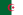 Algeria People's Democratic Republic of Algeria | UN member state | None | |
| 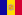 Andorra Principality of Andorra | UN member state | None | Andorra is a co-principality in which the office of head of state is jointly held ex officio by the French president and the bishop of the Roman Catholic diocese of Urgell,[7] who himself is appointed with approval from the Holy See. |
| 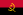 Angola Republic of Angola | UN member state | None | |
| Antigua and Barbuda | UN member state | None | Antigua and Barbuda is a Commonwealth realm[g] with one autonomous region, Barbuda.[h] |
| 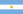 Argentina Argentine Republic[i] | UN member state | None | Argentina is a federation of 23 provinces and one autonomous city.[j] |
| UN member state | Not recognized by Pakistan. | Armenia is not recognized by Pakistan due to the dispute over Artsakh.[10][11][12] | |
| Australia Commonwealth of Australia | UN member state | None | Australia is a Commonwealth realm[g] and a federation of both states and territories. There are six states, three internal territories, six external territories and one claimed Antarctic external territory. The external territories of Australia are: |
| 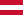 Austria Republic of Austria | UN member state | None | Member of the European Union.[e] Austria is a federation of nine states. |
| UN member state | None | Azerbaijan contains one autonomous region, Nakhchivan.[h] The de facto state of Artsakh has been established in the southwest of Azerbaijan. | |
| Bahamas, The Commonwealth of The Bahamas[14] | UN member state | None | The Bahamas is a Commonwealth realm.[g] |
| Bahrain Kingdom of Bahrain | UN member state | None | |
| Bangladesh People's Republic of Bangladesh | UN member state | None | |
| 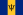 Barbados | UN member state | None | |
| 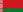 Belarus Republic of Belarus | UN member state | None | Many states rescinded their recognition of President Alexander Lukashenko following the disputed 2020 election. Lithuania currently recognizes Sviatlana Tsikhanouskaya's Coordination Council as the legitimate government of Belarus.[15] |
| 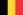 Belgium Kingdom of Belgium | UN member state | None | Member of the EU.[e] Belgium is a federation of three linguistic communities and three regions. |
| UN member state | None | Belize is a Commonwealth realm.[g] | |
| 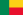 Benin Republic of Benin | UN member state | None | |
| Bhutan Kingdom of Bhutan | UN member state | None | |
| 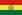 Bolivia Plurinational State of Bolivia | UN member state | None | |
| Bosnia and Herzegovina | UN member state | None | Bosnia and Herzegovina has two constituent entities:
and Brko District, a self-governing administrative district.[16] |
| Botswana Republic of Botswana | UN member state | None | |
| UN member state | None | Brazil is a federation of 26 states and one federal district. | |
| Brunei Brunei Darussalam | UN member state | None | |
| 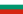 Bulgaria Republic of Bulgaria | UN member state | None | Member of the EU.[e] |
| 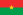 Burkina Faso | UN member state | None | |
| Burundi Republic of Burundi | UN member state | None | |
| UN member state | None | ||
| 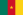 Cameroon Republic of Cameroon | UN member state | None | |
| UN member state | None | Canada is a Commonwealth realm[g] and a federation of ten provinces and three territories. | |
| UN member state | None | ||
| 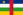 Central African Republic | UN member state | None | |
| UN member state | None | ||
| Chile Republic of Chile | UN member state | None | Chile has one special territory, Easter Island. [n] |
| UN member state | Partially unrecognized. Claimed by the Republic of China | China contains five autonomous regions, Guangxi, Inner Mongolia, Ningxia, Tibet, and Xinjiang.[h] Additionally, it has sovereignty over the Special Administrative Regions of:
China claims, but does not control Taiwan, which is governed by a rival administration (the Republic of China) that claims all of China as its territory.[p] China is not recognized by 13 UN member states and Vatican City, which, with the exception of Bhutan, all recognize the Republic of China (Taiwan) instead.[q] | |
| 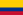 Colombia Republic of Colombia | UN member state | None | |
| 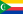 Comoros Union of the Comoros | UN member state | None | Comoros is a federation of three islands.[r] |
| 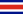 Costa Rica Republic of Costa Rica | UN member state | None | |
| 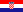 Croatia Republic of Croatia | UN member state | None | Member of the EU.[e] |
| 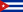 Cuba Republic of Cuba | UN member state | None | |
| Cyprus Republic of Cyprus | UN member state | Not recognized by Turkey[19] | Member of the EU.[e] The northeastern part of the island is the de facto state of Northern Cyprus.
Cyprus is not recognized by Turkey due to the Cyprus dispute, with Turkey recognizing Northern Cyprus. |
| Czech Republic[s] | UN member state | None | Member of the EU.[e] |
| 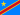 Democratic Republic of the Congo[t] | UN member state | None | |
| Denmark Kingdom of Denmark | UN member state | None | Member of the EU.[e] The Kingdom of Denmark includes 2 self-governing territories:
The metropolitan territory of Denmark, the Faroe Islands and Greenland form the three constituent countries of the Kingdom.[u] The Kingdom of Denmark as a whole is a member of the EU, but EU law (in most cases) does not apply to the Faroe Islands and Greenland. See Greenland and the European Union, and Faroe Islands and the European Union for more information.[20][21] |
| 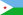 Djibouti Republic of Djibouti | UN member state | None | |
| 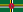 Dominica Commonwealth of Dominica | UN member state | None | |
| UN member state | None | ||
| East Timor Democratic Republic of Timor-Leste[v] | UN member state | None | |
| 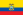 Ecuador Republic of Ecuador | UN member state | None | |
| Egypt Arab Republic of Egypt | UN member state | None | |
| 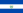 El Salvador Republic of El Salvador | UN member state | None | |
| Equatorial Guinea Republic of Equatorial Guinea | UN member state | None | |
| 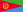 Eritrea State of Eritrea | UN member state | None | |
| Estonia Republic of Estonia | UN member state | None | Member of the EU.[e] |
| 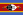 Eswatini Kingdom of Eswatini[w] | UN member state | None | |
| 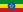 Ethiopia Federal Democratic Republic of Ethiopia | UN member state | None | Ethiopia is a federation of eleven regions and two chartered cities. |
| Fiji Republic of Fiji | UN member state | None | Fiji contains one autonomous region, Rotuma.[h][22][23] |
| Finland Republic of Finland | UN member state | None | Member of the EU.[e] |
| France French Republic | UN member state | None | Member of the EU.[e] France contains five overseas regions/departments; French Guiana, Guadeloupe, Martinique, Mayotte, and Runion. France also includes the overseas territories of: |
| 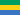 Gabon Gabonese Republic | UN member state | None | |
| 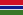 Gambia, The Republic of The Gambia[24] | UN member state | None | |
| Georgia | UN member state | None | Georgia contains two autonomous republics, Adjara and Abkhazia.[h] In Abkhazia and South Ossetia, de facto states have been formed. |
| UN member state | None | Member of the EU.[e] Germany is a federation of 16 states. | |
| Ghana Republic of Ghana | UN member state | None | |
| Greece Hellenic Republic | UN member state | None | Member of the EU.[e] Greece contains one autonomous area, Mount Athos.[25] |
| 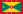 Grenada | UN member state | None | Grenada is a Commonwealth realm.[g] |
| Guatemala Republic of Guatemala | UN member state | None | |
| 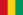 Guinea Republic of Guinea[z] | UN member state | None | |
| 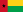 Guinea-Bissau Republic of Guinea-Bissau | UN member state | None | |
| 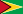 Guyana Co-operative Republic of Guyana | UN member state | None | |
| 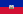 Haiti Republic of Haiti | UN member state | None | |
| Honduras Republic of Honduras | UN member state | None | |
| UN member state | None | Member of the EU.[e] | |
| 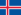 Iceland[aa] Republic of Iceland | UN member state | None | |
| India Republic of India | UN member state | None | India is a federation of 28 states and eight union territories. |
| Indonesia Republic of Indonesia | UN member state | None | Indonesia has eight autonomous provinces, Aceh, Jakarta, Central Papua, Highland Papua, Papua, South Papua, West Papua, and Yogyakarta.[h] |
| 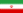 Iran Islamic Republic of Iran | UN member state | None | |
| UN member state | None | Iraq is a federation[r][29] of 19 governorates, four of which make up the autonomous Kurdistan Region.[h] | |
| Ireland[ab] | UN member state | None | Member of the EU.[e] |
| Israel State of Israel | UN member state | Partially unrecognized | Israel exerts strong control over the territory claimed by Palestine. It has annexed East Jerusalem,[31] an act not recognized by the international community.[32] Israel has varying levels of control over the rest of the West Bank, and although it ended its permanent civilian or military presence in the Gaza Strip, it is still considered to be the occupying power under international law.[33][34][35][36]
Israel is not recognized as a state by 28 UN members and the Sahrawi Arab Democratic Republic. The Palestine Liberation Organization, recognized by a majority of UN member states as the representative of the Palestinian people, recognized Israel in 1993. |
| Italy Italian Republic | UN member state | None | Member of the EU.[e] Italy has 5 autonomous regions, Aosta Valley, Friuli-Venezia Giulia, Sardinia, Sicily and Trentino-Alto Adige/Sdtirol.[h] |
| UN member state | None | ||
| 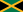 Jamaica | UN member state | None | Jamaica is a Commonwealth realm.[g] |
| Japan | UN member state | None | |
| 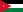 Jordan Hashemite Kingdom of Jordan | UN member state | None | |
| Kazakhstan Republic of Kazakhstan | UN member state | None | |
| 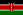 Kenya Republic of Kenya | UN member state | None | |
| 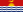 Kiribati Republic of Kiribati | UN member state | None | |
| 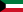 Kuwait State of Kuwait | UN member state | None | |
| 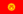 Kyrgyzstan Kyrgyz Republic | UN member state | None | |
| Laos Lao People's Democratic Republic | UN member state | None | |
| Latvia Republic of Latvia | UN member state | None | Member of the EU.[e] |
| UN member state | None | ||
| 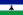 Lesotho Kingdom of Lesotho | UN member state | None | |
| 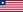 Liberia Republic of Liberia | UN member state | None | |
| 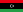 Libya State of Libya | UN member state | None | |
| 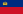 Liechtenstein Principality of Liechtenstein | UN member state | None | |
| 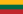 Lithuania Republic of Lithuania | UN member state | None | Member of the EU.[e] |
| Luxembourg Grand Duchy of Luxembourg | UN member state | None | Member of the EU.[e] |
| 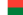 Madagascar Republic of Madagascar | UN member state | None | |
| 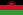 Malawi Republic of Malawi | UN member state | None | |
| Malaysia | UN member state | None | Malaysia is a federation of 13 states and three federal territories. |
| Maldives Republic of Maldives | UN member state | None | |
| Mali Republic of Mali | UN member state | None | |
| Malta Republic of Malta | UN member state | None | Member of the EU.[e] |
| Marshall Islands Republic of the Marshall Islands | UN member state | None | Under Compact of Free Association with the United States. |
| Mauritania Islamic Republic of Mauritania | UN member state | None | |
| Mauritius Republic of Mauritius | UN member state | None | Mauritius has an autonomous island, Rodrigues.[h] |
| Mexico United Mexican States | UN member state | None | Mexico is a federation of 31 states and one autonomous city.
The Rebel Zapatista Autonomous Municipalities have de facto autonomy. |
| Micronesia, Federated States of | UN member state | None | Under Compact of Free Association with the United States. The Federated States of Micronesia is a federation of four states. |
| Moldova Republic of Moldova | UN member state | None | Moldova has the autonomous regions of Gagauzia and the Left Bank of the Dniester. The latter and a city Bender (Tighina), is under the de facto control of Transnistria. |
| Monaco Principality of Monaco | UN member state | None | |
| Mongolia | UN member state | None | |
| Montenegro | UN member state | None | |
| Morocco Kingdom of Morocco | UN member state | None | Part of the Moroccan-claimed Western Sahara is controlled by the partially recognized Sahrawi Arab Democratic Republic. |
| Mozambique Republic of Mozambique | UN member state | None | |
| Myanmar Republic of the Union of Myanmar[ad] | UN member state | None | Wa State is a de facto autonomous state within Myanmar. The United Nations has not recognized the de facto ruling government of Myanmar, the State Administration Council.[6] |
| Namibia Republic of Namibia | UN member state | None | |
| Nauru Republic of Nauru | UN member state | None | |
| Nepal Federal Democratic Republic of Nepal | UN member state | None | Nepal is a federation composed of 7 provinces. |
| Netherlands Kingdom of the Netherlands | UN member state | None | Member of the EU.[e] The Kingdom of the Netherlands includes four areas with substantial autonomy:
Metropolitan Netherlands, Aruba, Curaao and Sint Maarten form the four constituent countries of the Kingdom. Three overseas parts of the Netherlands (Bonaire, Saba and Sint Eustatius) are special municipalities of metropolitan Netherlands.[ae] The Kingdom of the Netherlands as a whole is a member of the EU, but EU law only wholly applies to parts within Europe. |
| New Zealand | UN member state | None | New Zealand is a Commonwealth realm,[g] and has one dependent territory and one claimed Antarctic dependent territory:
The New Zealand Government acts for the entire Realm of New Zealand in all international contexts, which has responsibilities for (but no rights of control over) two freely associated states: The Cook Islands and Niue have diplomatic relations with 49 and 18 UN members respectively.[37][38] They have full treaty-making capacity in the UN,[39] and are members of some UN specialized agencies. |
| Nicaragua Republic of Nicaragua | UN member state | None | Nicaragua contains two autonomous regions, Atlntico Sur and Atlntico Norte.[h] |
| Niger Republic of the Niger | UN member state | None | |
| Nigeria Federal Republic of Nigeria | UN member state | None | Nigeria is a federation of 36 states and one federal territory. |
| North Korea Democratic People's Republic of Korea | UN member state | Claimed by South Korea | North Korea is not recognized by seven UN members, Botswana, Estonia, France, Israel, Japan, the United States, and South Korea, the last of which claims to be the sole legitimate government of Korea.[40] |
| UN member state | None | ||
| Norway Kingdom of Norway | UN member state | None | Norway has two unincorporated areas in Europe:
Norway has one dependent territory and two claimed Antarctic dependent territories in the Southern Hemisphere: |
| Oman Sultanate of Oman | UN member state | None | |
| Pakistan Islamic Republic of Pakistan | UN member state | None | Pakistan is a federation of four provinces and one capital territory. Pakistan exercises control over certain portions of Kashmir, but has not officially annexed any of it,[41][42] instead regarding it as a disputed territory.[43][44] The portions that it controls are divided into two territories, administered separately from Pakistan proper:
Azad Kashmir describes itself as a "self-governing state under Pakistani control", while Gilgit-Baltistan is described in its governance order as a group of "areas" with self-government.[45][46][47] These territories are not usually regarded as sovereign, as they do not fulfil the criteria set out by the declarative theory of statehood (for example, their current laws do not allow them to engage independently in relations with other states). Several state functions of these territories (such as foreign affairs and defense) are performed by Pakistan.[46][48][49] |
| Palau Republic of Palau | UN member state | None | Under Compact of Free Association with the United States. |
| Palestine State of Palestine | UN General Assembly observer state; member of two UN specialized agencies | Partially unrecognised. | The State of Palestine, declared in 1988, is not recognized as a state by Israel but has received diplomatic recognition from 138 states.[50] The proclaimed state has no agreed territorial borders, or effective control over much of the territory that it proclaimed.[51] The Palestinian National Authority is an interim administrative body formed as a result of the Oslo Accords that exercises limited autonomous jurisdiction within the Palestinian territories. In foreign relations, Palestine is represented by the Palestine Liberation Organization.[52] The State of Palestine is a member state of UNESCO,[53] UNIDO and other international organizations.[54] |
| Panama Republic of Panama | UN member state | None | |
| Papua New Guinea Independent State of Papua New Guinea | UN member state | None | Papua New Guinea is a Commonwealth realm[g] with one autonomous region, Bougainville.[h] |
| Paraguay Republic of Paraguay | UN member state | None | |
| Peru Republic of Peru | UN member state | None | |
| Philippines Republic of the Philippines | UN member state | None | The Philippines contains one autonomous region, Bangsamoro.[h] |
| Poland Republic of Poland | UN member state | None | Member of the EU.[e] |
| Portugal Portuguese Republic | UN member state | None | Member of the EU.[e] Portugal contains two autonomous regions, the Azores and Madeira.[h] |
| Qatar State of Qatar | UN member state | None | |
| Republic of the Congo[ag] | UN member state | None | |
| Romania | UN member state | None | Member of the EU.[e] |
| Russia Russian Federation | UN member state | None | Russia is a federation of 83 internationally recognized federal subjects (republics, oblasts, krais, autonomous okrugs, federal cities, and an autonomous oblast). Several of the federal subjects are ethnic republics.[h] |
| Rwanda Republic of Rwanda | UN member state | None | |
| Saint Kitts and Nevis Federation of Saint Christopher and Nevis | UN member state | None | Saint Kitts and Nevis is a Commonwealth realm[g] and is a federation[r] of two islands, St. Kitts and Nevis. |
| Saint Lucia | UN member state | None | Saint Lucia is a Commonwealth realm.[g] |
| Saint Vincent and the Grenadines | UN member state | None | Saint Vincent and the Grenadines is a Commonwealth realm.[g] |
| Samoa Independent State of Samoa | UN member state | None | |
| San Marino Republic of San Marino | UN member state | None | |
| UN member state | None | So Tom and Prncipe contains one autonomous province, Prncipe.[h] | |
| Saudi Arabia Kingdom of Saudi Arabia | UN member state | None | |
| Senegal Republic of Senegal | UN member state | None | |
| UN member state | None | Serbia contains two autonomous regions, Vojvodina and Kosovo and Metohija.[h] The latter is under the de facto control of Kosovo. | |
| Seychelles Republic of Seychelles | UN member state | None | |
| Sierra Leone Republic of Sierra Leone | UN member state | None | |
| Singapore Republic of Singapore | UN member state | None | |
| Slovakia Slovak Republic | UN member state | None | Member of the EU.[e] |
| Slovenia Republic of Slovenia | UN member state | None | Member of the EU.[e] |
| Solomon Islands | UN member state | None | Solomon Islands is a Commonwealth realm.[g] |
| Somalia Federal Republic of Somalia | UN member state | None | Somalia is a federation of six states. Two, Puntland and Galmudug, have self-declared autonomy, while one, Somaliland, is de facto independent. |
| South Africa Republic of South Africa | UN member state | None | |
| South Korea Republic of Korea | UN member state | Claimed by North Korea | South Korea has one autonomous region, Jeju Province.[h][55]
South Korea is not recognized by North Korea, which claims to be the sole legitimate government of Korea. |
| UN member state | None | South Sudan is a federation of 10 states and three administrative areas.
| |
| Spain Kingdom of Spain | UN member state | None | Member of the EU.[e] Spain is divided into 17 autonomous communities and two special autonomous cities.[h][ah] |
| Sri Lanka Democratic Socialist Republic of Sri Lanka[ai] | UN member state | None | |
| Sudan Republic of the Sudan | UN member state | None | Sudan is a federation of 18 states.
|
| Suriname Republic of Suriname | UN member state | None | |
| Sweden Kingdom of Sweden | UN member state | None | Member of the EU.[e] |
| Switzerland Swiss Confederation | UN member state | None | Switzerland is a federation of 26 cantons. |
| Syria Syrian Arab Republic | UN member state | None | The Syrian National Coalition, which is recognized as the legitimate representative of the Syrian people by 20 UN members, has established an interim government to rule rebel controlled territory during the Syrian civil war.
Syria has one self-declared autonomous region: Rojava. |
| Tajikistan Republic of Tajikistan | UN member state | None | Tajikistan contains one autonomous region, Gorno-Badakhshan Autonomous Province.[h] |
| Tanzania United Republic of Tanzania | UN member state | None | Tanzania contains one autonomous region, Zanzibar.[h] |
| Thailand Kingdom of Thailand | UN member state | None | |
| Togo Togolese Republic | UN member state | None | |
| Tonga Kingdom of Tonga | UN member state | None | |
| Trinidad and Tobago Republic of Trinidad and Tobago | UN member state | None | Trinidad and Tobago contains one autonomous region, Tobago.[h] |
| UN member state | None | ||
| Turkey Republic of Trkiye[aj] | UN member state | None | |
| Turkmenistan | UN member state | None | |
| UN member state | None | Tuvalu is a Commonwealth realm.[g] | |
| Uganda Republic of Uganda | UN member state | None | |
| Ukraine | UN member state | None | Ukraine contains one autonomous region, the Autonomous Republic of Crimea,[h] which is under the control of Russia. Five other areas of Ukraine are under full or partial Russian control, including Donetsk, Kherson, Luhansk, Sevastopol, and Zaporizhzhia. |
| United Arab Emirates | UN member state | None | The United Arab Emirates is a federation of seven emirates. |
| United Kingdom United Kingdom of Great Britain and Northern Ireland | UN member state | None | The United Kingdom is a Commonwealth realm[g] consisting of four constituent countries; England, Northern Ireland, Scotland, and Wales. The United Kingdom has the following 13 overseas territories and one claimed Antarctic dependent territory:
The British monarch also has direct sovereignty over three self-governing Crown Dependencies: |
| UN member state | None | The United States is a federation of 50 states, one federal district, and one incorporated territory. Additionally, the Federal government of the United States has sovereignty over 13 unincorporated territories. Of these territories, the following five are inhabited possessions:
It also has sovereignty over several uninhabited territories:
It also disputes sovereignty over the following two territories: Three sovereign states have become associated states of the United States under the Compact of Free Association:
| |
| Uruguay Oriental Republic of Uruguay | UN member state | None | |
| Uzbekistan Republic of Uzbekistan | UN member state | None | Uzbekistan contains one autonomous region, Karakalpakstan.[h] |
| Vanuatu Republic of Vanuatu | UN member state | None | |
| Vatican City Vatican City State | UN General Assembly observer state under the designation of "Holy See"; member of three UN specialized agencies | None | Administered by the Holy See, a sovereign entity with diplomatic relations to 183 states. This figure consists of 180 UN member states, the Cook Islands, the Republic of China (Taiwan), and the State of Palestine.[58] In addition, the European Union and the Sovereign Military Order of Malta maintain diplomatic relations with the Holy See. The Holy See is a member of three UN specialized agencies (ITU, UPU, and WIPO) and the IAEA, as well as being a permanent observer of the UN (in the category of "Non-member State")[52] and multiple other UN System organizations. The Vatican City is governed by officials appointed by the Pope, who is the Bishop of the Diocese of Rome and ex officio sovereign of Vatican City. |
| Venezuela Bolivarian Republic of Venezuela | UN member state | None | Venezuela is a federation of 23 states, one capital district, and federal dependencies. |
| Vietnam Socialist Republic of Vietnam | UN member state | None | |
| Yemen Republic of Yemen | UN member state | None | |
| UN member state | None | ||
| Zimbabwe Republic of Zimbabwe | UN member state | None |
Other states
|
"Membership within the UN System" column legend Member state of a UN Specialized Agency
No membership
|
"Sovereignty dispute" column legend Undisputed sovereignty
Disputed sovereignty
|
| Common and formal names | Membership within the UN System[ak] | Sovereignty dispute[al] | Further information on status and recognition of sovereignty[am] |
|---|---|---|---|
| Abkhazia Republic of Abkhazia | No membership | Claimed by Georgia | Recognized by Russia, Nauru, Nicaragua, Syria, Venezuela, Artsakh, South Ossetia and Transnistria.[59] Claimed in whole by Georgia as the Autonomous Republic of Abkhazia. |
| Artsakh Republic of Artsakh[an] | No membership | Claimed by Azerbaijan | A de facto independent state,[60][61][62] recognised only by Abkhazia,[63] South Ossetia[63] and Transnistria.[63][64] Claimed in whole by Azerbaijan.[65] |
| Cook Islands | Member of eight UN specialized agencies | None (See political status) |
A state in free association with New Zealand, the Cook Islands maintains diplomatic relations with 52 other states. The Cook Islands is a member of multiple UN agencies with full treaty making capacity.[39] It shares a head of state with New Zealand as well as having shared citizenship. |
| Member of two UN specialized agencies | Claimed by Serbia | Pursuant to United Nations Security Council Resolution 1244, Kosovo was placed under the administration of the United Nations Interim Administration Mission in Kosovo in 1999.[66] Kosovo declared independence in 2008, and it has received diplomatic recognition from 114 UN member states and the Republic of China, while 18 states have recognized Kosovo only to later withdraw their recognition.[67] Serbia continues to maintain its sovereignty claim over Kosovo. Other UN member states and non UN member states continue to recognize Serbian sovereignty or have taken no position on the question. Kosovo is a member of the International Monetary Fund and the World Bank Group. The Republic of Kosovo has de facto control over most of the territory, with limited control in North Kosovo. | |
| Member of five UN specialized agencies | None (See political status) |
A state in free association with New Zealand, Niue maintains diplomatic relations with 20 other states. Niue is a member of multiple UN agencies with full treaty making capacity.[39] It shares a head of state with New Zealand as well as having shared citizenship. | |
| Northern Cyprus Turkish Republic of Northern Cyprus | No membership | Claimed by the Republic of Cyprus | Recognized only by Turkey. Under the name "Turkish Cypriot State", it is an observer state of the Organisation of Islamic Cooperation and the Economic Cooperation Organization. Northern Cyprus is claimed in whole by the Republic of Cyprus.[68] |
| Sahrawi Arab Democratic Republic | No membership | Claimed by Morocco | Recognized at some stage by 84 UN member states, 39 of which have since withdrawn or frozen their recognition. It is a founding member of the African Union and the AsianAfrican Strategic Partnership formed at the 2005 AsianAfrican Conference. The territories under its control, the so-called Free Zone, are claimed in whole by Morocco as part of its Southern Provinces. In turn, the Sahrawi Arab Democratic Republic claims the part of Western Sahara to the west of the Moroccan Wall controlled by Morocco. Its government resides in exile in Tindouf, Algeria. |
| Somaliland Republic of Somaliland | No membership | Claimed by Somalia | A de facto independent state,[60][69][70][71][72] not diplomatically recognized by any other state, claimed in whole by the Federal Republic of Somalia.[73] |
| South Ossetia Republic of South Ossetiathe State of Alania | No membership | Claimed by Georgia | A de facto independent state,[74] recognized by Russia, Nicaragua, Nauru, Syria, Venezuela, Abkhazia, Artsakh, and Transnistria. Claimed in whole by Georgia as the Provisional Administration of South Ossetia.[75] |
| Taiwan Republic of China[o] | No membership, former membership until 1971 | Partially unrecognized. Claimed by the People's Republic of China | A state competing (nominally) for recognition with the People's Republic of China (PRC) as the government of China since 1949. The Republic of China (ROC) controls the island of Taiwan, Penghu, Kinmen, the Matsu Islands, and Pratas Island, as well as Taiping Island and Zhongzhou Reef of the Spratly Islands, and has not renounced claims over its annexed territories on the mainland.[76] The ROC is recognized by 12 UN member states and the Holy See as of 26 March 2023, none of which recognize the PRC. Additionally, one UN member (Bhutan) has refrained from recognizing either the ROC or the PRC.
In addition to these relations, the ROC also maintains unofficial relations[77] with 58 UN member states, one self-declared state (Somaliland), three territories (Guam, Hong Kong, and Macau), and the European Union via its representative offices and consulates under the One China principle. Taiwan has the 31st-largest diplomatic network in the world with 110 offices.[78] The territory of the ROC is claimed in whole by the PRC.[p] The ROC participates in international organizations under a variety of pseudonyms, most commonly "Chinese Taipei" and in the WTO it has full membership under the designation of "Separate Customs Territory of Taiwan, Penghu, Kinmen and Matsu". The ROC was a founding member of the UN and enjoyed membership from 1945 to 1971, with veto power in the UN Security Council. See China and the United Nations. |
| Transnistria Pridnestrovian Moldavian Republic | No membership | Claimed by Moldova | A de facto independent state,[60] recognized only by Abkhazia, Artsakh and South Ossetia.[59] Claimed in whole by Moldova.[79] |
See also
- Armorial of sovereign states
- Gallery of sovereign state flags
- ISO 3166-1
- List of adjectival and demonymic forms for countries and nations
- List of administrative divisions by country
- List of associated states
- List of condominiums
- List of countries and dependencies and their capitals in native languages
- List of countries and dependencies by area
- List of countries and dependencies by population
- List of countries by United Nations geoscheme
- List of country-name etymologies
- List of dependent territories
- List of international rankings
- List of ISO 3166 country codes
- List of micronations
- List of national capitals
- List of rebel groups that control territory
- List of states with limited recognition
- List of territorial disputes
- List of territories governed by the United Nations
- Lists of political entities by century
- Lists of state leaders by century
- Member states of the United Nations
- Sovereign state
- Template:Clickable world map
- Terra nullius
- United Nations list of non-self-governing territories
Notes
- ^ The following bullets are grouped according to the availability of sources for the two criteria ((a) and/or (b)). This arrangement is not intended to reflect the relative importance of the two theories. Additional details are discussed in the state's individual entries.
- ^ The Sovereign Military Order of Malta is not included, as despite being a sovereign entity it lacks territory and does not claim statehood. Entities considered to be micronations are not included. It is often up to debate whether a micronation truly controls its claimed territory. Also omitted from this list are all uncontacted peoples, either who live in societies that cannot be defined as states or whose statuses as such are not definitively known.
- ^ This column indicates whether or not a state is a member of the United Nations.[1] It also indicates which non-member states participate in the United Nations System through membership in the International Atomic Energy Agency or one of the specialized agencies of the United Nations. All United Nations members belong to at least one specialized agency and are parties to the statute of the International Court of Justice.
- ^ This column indicates whether or not a state is the subject of a major sovereignty dispute. Only states whose entire sovereignty is disputed by another state are listed.
- ^ Jump up to: a b c d e f g h i j k l m n o p q r s t u v w x y z aa ab ac The member states of the European Union have transferred part of their sovereignty in the form of legislative, executive, and judicial powers to the institutions of the EU, which is an example of supranational union. The EU has 27 member states.[13]
- ^ Information is included on:
- The extent to which a state's sovereignty is recognized internationally. More information can be found at List of states with limited recognition,
- Membership in the European Union,[e] where applicable,
- Any dependencies, if applicable, which are generally not part of the territory of the sovereign state,
- federal structure of the state, where applicable. More information can be found at Federated state,
- Any autonomous areas inside the territory of the sovereign state,
- Any situations where one person is the Head of State of more than one state,
- Any governments in exile recognized by at least one state.
- ^ Jump up to: a b c d e f g h i j k l m n o Commonwealth realm refers to any member state of the Commonwealth of Nations whose head of state is King Charles III. Each realm is separate, independent, and a sovereign state; see Relationship of the realms.
- ^ Jump up to: a b c d e f g h i j k l m n o p q r s t u v w x For more information on divisions with a high degree of autonomy, see List of autonomous areas by country.[8]
- ^ The Argentine Constitution (Art. 35) recognizes the following denominations for Argentina: "United Provinces of the Ro de la Plata", "Argentine Republic" and "Argentine Confederation"; furthermore, it establishes the usage of "Argentine Nation" for purposes of legislation.
- ^ Argentina's claimed Antarctic territory of Argentine Antarctica (Antrtida Argentina) is one of five constituent departments of the province Tierra del Fuego.[9]
- ^ Sometimes officially "Azerbaijan Republic"
- ^ The legal name for Canada is the sole word; an officially sanctioned, though disused, name is Dominion of Canada (which includes its legal title); see: Name of Canada, Dominion.
- ^ The government of Cape Verde declared "Cabo Verde" to be the official English name of the country in 2013.[17]
- ^ Chile's claimed Antarctic territory of the Chilean Antarctic (Antrtica Chilena) is a commune of the Antrtica Chilena Province of the Magallanes Region.
- ^ Jump up to: a b The People's Republic of China (PRC) is commonly referred to as "China", while the Republic of China (ROC) is commonly referred to as "Taiwan". The ROC is also occasionally known diplomatically as Chinese Taipei, or by other alternative names.
- ^ Jump up to: a b In 1949, the Republic of China government led by the Kuomintang (KMT) lost the Chinese Civil War to the Chinese Communist Party (CCP) and set up a provisional capital in Taipei. The CCP established the PRC. As such, the political status of the ROC and legal status of Taiwan (alongside the territories under ROC jurisdiction) are in dispute. In 1971, the United Nations gave the China seat to the PRC. In the view of the United Nations, no member of the organization withdrew as a consequence of this but the ROC representatives declared that they were withdrawing. Most states recognize the PRC to be the sole legitimate representative of all China, and the UN classifies Taiwan as "Taiwan, Province of China". The ROC has de facto relations with most sovereign states. A significant political movement within Taiwan advocates Taiwan independence.
- ^ See also Dates of establishment of diplomatic relations with the People's Republic of China and Foreign relations of China.
- ^ Jump up to: a b c More information on more or less federal structures can be found at a List of federations.[18]
- ^ An official short name in English has been adopted by the Czech government, "Czechia". This variant remains uncommon, but has been adopted by several companies and organizations including the United Nations. See Name of the Czech Republic.
- ^ Also known as Congo-Kinshasa. Formerly referred to as Zaire, its official name from 1971 to 1997.
- ^ The designation "Denmark" can refer either to metropolitan Denmark or to the entire Danish Realm (for example in international organizations).
- ^ The government of East Timor uses "Timor-Leste" as the official English name of the country.
- ^ Formerly referred to as the Kingdom of Swaziland, its official name until 2018.
- ^ land was demilitarized by the Treaty of Paris in 1856, which was later affirmed by the League of Nations in 1921, and in a somewhat different context reaffirmed in the treaty on Finland's admission to the European Union in 1995.
- ^ France's claimed Antarctic territory of Adlie Land (Terre Adlie) is one of five constituent districts of the French Southern and Antarctic Lands.
- ^ Also known as Guinea-Conakry.
- ^ While sometimes referred to as the "Republic of Iceland"[26][27] and sometimes its counterpart Lveldi sland in Icelandic, the official name of the country is simply "Iceland".[28] One example of the former is the name of the Constitution of Iceland, which in Icelandic is Stjrnarskr lveldisins slands and literally means "the Constitution of the republic of Iceland". However, in this usage "republic" is not capitalized.
- ^ "Ireland" is the official name of the country in English. "Republic of Ireland" (the official description in English) and "ire" (the official name in Irish) have sometimes been used unofficially to distinguish the state from the larger island of Ireland, however, this is officially deprecated.[30] See names of the Irish state.
- ^ The government of Ivory Coast uses "Cte d'Ivoire" as the official English name of the country.
- ^ The country's official name of Myanmar, adopted in 1989, has been mixed and controversial, with the former name Burma still being used in many cases. See Names of Myanmar.
- ^ The designation "Netherlands" can refer either to metropolitan Netherlands or to the entire Kingdom (e.g. in international organizations).
- ^ Formerly known constitutionally as the "Republic of Macedonia" from 1991 to 2019 and under the international designation of "the former Yugoslav Republic of Macedonia" (FYROM) from 1993 to 2019 due to the Macedonia naming dispute with Greece. Following the Prespa agreement going into effect in February 2019, the country was renamed "North Macedonia".
- ^ Also known as Congo-Brazzaville.
- ^ Spain holds several small overseas territories scattered along the Mediterranean coast bordering Morocco, known as the plazas de soberana.
- ^ Formerly known as Ceylon until 1972.
- ^ The government of Turkey uses "Trkiye" as the official English name of the country.
- ^ This column indicates whether or not a state is a member of the United Nations.[1] It also indicates which non-member states participate in the United Nations System through membership in the International Atomic Energy Agency or one of the specialized agencies of the United Nations. All United Nations members belong to at least one specialized agency and are parties to the statute of the International Court of Justice.
- ^ This column indicates whether or not a state is the subject of a major sovereignty dispute. Only states whose entire sovereignty is disputed by another state are listed.
- ^ Information is included on:
- The extent to which a state's sovereignty is recognized internationally. More information can be found at List of states with limited recognition,
- Membership in the European Union,[e] where applicable,
- Any dependencies, if applicable, which are generally not part of the territory of the sovereign state,
- federal structure of the state, where applicable. More information can be found at Federated state,
- Any autonomous areas inside the territory of the sovereign state,
- Any situations where one person is the Head of State of more than one state,
- Any governments in exile recognized by at least one state.
- ^ Formerly known as the Nagorno-Karabakh Republic, its official name from 1991 to 2017
References
- ^ Jump up to: a b c "Member States | United Nations". United Nations. Archived from the original on 1 March 2023. Retrieved 7 March 2023.
- ^ Hersch Lauterpacht (2012). Recognition in International Law. Cambridge University Press. p. xxxv. ISBN 9781107609433.
- ^ Hahn, Gordon (2002). Russia's Revolution from Above, 19852000: Reform, Transition, and Revolution in the Fall of the Soviet Communist Regime. New Brunswick: Transaction Publishers. p. 527. ISBN 978-0765800497.
- ^ Griffiths, Ryan (2016). Age of Secession: The International and Domestic Determinants of State Birth. Cambridge: Cambridge University Press. pp. 85, 213242. ISBN 978-1107161627.
- ^ "Taliban announce new government for Afghanistan". BBC News. 7 September 2021.
- ^ Jump up to: a b "U.N. Seats Denied, for Now, to Afghanistan's Taliban and Myanmar's Junta". The New York Times. 1 December 2021.
- ^ "Andorra country profile". BBC News. Archived from the original on 15 February 2009. Retrieved 8 November 2011.
- ^ Government of Antigua and Barbuda. "Chapter 44: The Barbuda Local Government Act" (PDF). Laws of Antigua and Barbuda. Archived from the original (PDF) on 6 July 2011. Retrieved 10 November 2010.
- ^ "Tierra del Fuego and Antarctica". Patagonia-Argentina. Retrieved 12 September 2020.
- ^ "Pakistan Worldview, Report 21, Visit to Azerbaijan" (PDF). Senate of Pakistan Foreign Relations Committee. 2008. Archived from the original (PDF) on 19 February 2009.
- ^ "Nilufer Bakhtiyar: "For Azerbaijan Pakistan does not recognize Armenia as a country"". www.today.az. Retrieved 10 February 2023.
- ^ "Pakistan the only country not recognizing Armenia envoy". News.Az. 5 February 2014. Archived from the original on 23 February 2014. Retrieved 17 February 2014.
We are the only country not recognizing Armenia as a state.
- ^ "EU country profiles | European Union". european-union.europa.eu. Retrieved 10 February 2023.
- ^ "Bahamas, The | The Commonwealth". thecommonwealth.org. 15 August 2013. Archived from the original on 9 March 2018. Retrieved 12 March 2018.
- ^ Ministry of Foreign Affairs of the Republic of Lithuania (23 September 2020). "Lithuanian Foreign Ministry's statement on the situation in Belarus". Retrieved 14 March 2022.
- ^ Stjepanovi, Dejan (2015). "Dual Substate Citizenship as Institutional Innovation: The Case of Bosnia's Brko District". Nationalism and Ethnic Politics. 21 (4): 382383. doi:10.1080/13537113.2015.1095043. eISSN 1557-2986. ISSN 1353-7113. OCLC 5927465455. S2CID 146578107.
- ^ Tanya Basu (14 December 2013). "Cape Verde Gets New Name: 5 Things to Know About How Maps Change". National Geographic. Archived from the original on 20 October 2018. Retrieved 8 October 2018.
- ^ Constitution of Comoros, Art. 1.
- ^ Andreas S. Kakouris (9 July 2010). "Cyprus is not at peace with Turkey". CNN. Archived from the original on 18 May 2014. Retrieved 17 May 2014.
Turkey stands alone in violation of the will of the international community. It is the only country to recognize the "TRNC" and is the only country that does not recognize the Republic of Cyprus and its government.
- ^ "Home Rule Act of the Faroe Islands : No. 137 of March 23, 1948". Statsministeriat. Copenhagen. Archived from the original on 10 September 2015. Retrieved 20 May 2015.
- ^ "The Greenland Home Rule Act : Act No. 577 of 29 November 1978". Statsministeriat. Copenhagen. Archived from the original on 14 February 2014. Retrieved 20 May 2014.
- ^ "Rotuma Act". Laws of Fiji (1978 ed.). Suva, Fiji: Government of Fiji. 1927. Archived from the original on 21 June 2010. Retrieved 10 July 2010.
- ^ Government of Fiji, Office of the Prime Minister (1978). "Chapter 122: Rotuma Act". Laws of Fiji. University of the South Pacific. Archived from the original on 1 March 2011. Retrieved 10 November 2010.
- ^ "The Gambia profile". BBC News. 14 February 2018. Archived from the original on 11 March 2018. Retrieved 12 March 2018.
- ^ Constitution of Greece, Art. 105.
- ^ "Iceland - Culture, History, & People". Archived from the original on 18 July 2011. Retrieved 2 February 2016.
- ^ "Working Paper No. 54 : UNGEGN list of country names (Prepared by the United Nations Group of Experts on Geographical Names)" (PDF). unstats.un.org. Vienna. May 2011. Archived (PDF) from the original on 11 August 2011. Retrieved 2 February 2016.
- ^ "Hvert er formlegt heiti landsins okkar?". Archived from the original on 22 July 2011. Retrieved 2 February 2016.
- ^ "Iraqi constitution" (PDF). Archived from the original (PDF) on 18 May 2016.
- ^ Daly, Mary E. (January 2007). "The Irish Free State/ire/Republic of Ireland/Ireland: "A Country by Any Other Name"?". Journal of British Studies. Cambridge University Press on behalf of The North American Conference on British Studies. 46 (1): 7290. doi:10.1086/508399. JSTOR 10.1086/508399.
- ^ "Basic Law: Jerusalem, Capital of Israel". www.knesset.gov.il. Archived from the original on 5 September 2014. Retrieved 7 July 2014.
- ^ "Disputes: International". CIA World Factbook. Archived from the original on 14 May 2011. Retrieved 8 November 2011.
- ^ Bell, Abraham (28 January 2008). "International Law and Gaza: The Assault on Israel's Right to Self-Defense". Jerusalem Issue Brief, Vol. 7, No. 29. Jerusalem Center for Public Affairs. Archived from the original on 21 June 2010. Retrieved 16 July 2010.
- ^ Salih, Zak M. (17 November 2005). "Panelists Disagree Over Gaza's Occupation Status". University of Virginia School of Law. Archived from the original on 3 March 2016. Retrieved 16 July 2010.
- ^ "Israel: 'Disengagement' Will Not End Gaza Occupation". Human Rights Watch. 29 October 2004. Archived from the original on 1 November 2008. Retrieved 16 July 2010.
- ^ Sanger, Andrew (2011). M.N. Schmitt; Louise Arimatsu; Tim McCormack (eds.). "The Contemporary Law of Blockade and the Gaza Freedom Flotilla". Yearbook of International Humanitarian Law 2010. Yearbook of International Humanitarian Law. Springer Science & Business Media. 13: 429. doi:10.1007/978-90-6704-811-8_14. ISBN 978-90-6704-811-8.
It is this direct external control over Gaza and indirect control over life within Gaza that has led the United Nations, the UN General Assembly, the UN Fact Finding Mission to Gaza, International human rights organisations, US Government websites, the UK Foreign and Commonwealth Office and a significant number of legal commentators, to reject the argument that Gaza is no longer occupied.
* Scobbie, Iain (2012). Elizabeth Wilmshurst (ed.). International Law and the Classification of Conflicts. Oxford University Press. p. 295. ISBN 978-0-19-965775-9.Even after the accession to power of Hamas, Israel's claim that it no longer occupies Gaza has not been accepted by UN bodies, most States, nor the majority of academic commentators because of its exclusive control of its border with Gaza and crossing points including the effective control it exerted over the Rafah crossing until at least May 2011, its control of Gaza's maritime zones and airspace which constitute what Aronson terms the 'security envelope' around Gaza, as well as its ability to intervene forcibly at will in Gaza.
* Gawerc, Michelle (2012). Prefiguring Peace: Israeli-Palestinian Peacebuilding Partnerships. Lexington Books. p. 44. ISBN 9780739166109.In other words, while Israel maintained that its occupation of Gaza ended with its unilateral disengagement Palestinians as well as many human right organizations and international bodies argued that Gaza was by all intents and purposes still occupied.
- ^ Federal Foreign Office of Germany (November 2009). "Beziehungen zu Deutschland". Government of Germany. Archived from the original on 23 July 2010. Retrieved 16 July 2010. For more information, see Foreign relations of the Cook Islands.
- ^ Republic of Nauru Permanent Mission to the United Nations. "Foreign Affairs". United Nations. Archived from the original on 4 October 2014. Retrieved 16 July 2010.
- ^ Jump up to: a b c "Article 102, Repertory of Practice of United Nations Organs, Supplement No. 8, Volume VI (19891994)" (PDF). untreaty.un.org. Archived from the original (PDF) on April 3, 2012. Retrieved July 15, 2011.
- ^ "Treaty on Basic Relations between Japan and the Republic of Korea". Archived from the original on 13 March 2009. Retrieved 27 October 2008.
- ^ Constitution of Pakistan, Art. 1.
- ^ Aslam, Tasnim (11 December 2006). "Pakistan Does Not Claim Kashmir As An Integral Part..." Outlook India. The Outlook Group. Archived from the original on 13 December 2011. Retrieved 27 February 2011.
- ^ Williams, Kristen P. (2001). Despite nationalist conflicts: theory and practice of maintaining world peace. Greenwood Publishing Group. pp. 154155. ISBN 978-0-275-96934-9.
- ^ Pruthi, R.K. (2001). An Encyclopaedic Survey Of Global Terrorism In 21St Century. Anmol Publications Pvt. Ltd. pp. 120121. ISBN 978-81-261-1091-9.
- ^ "Azad Kashmir Day". Archived from the original on 12 August 2014. Retrieved 28 July 2014.
- ^ Jump up to: a b "To Be Published In The Next Issue Of The" (PDF). Archived (PDF) from the original on 5 September 2014. Retrieved 28 July 2014.
- ^ "AJ&K History". Archived from the original on 6 January 2018. Retrieved 6 January 2018.
- ^ Lansford, Tom (8 April 2014). Political Handbook of the World 2014. ISBN 9781483333281. Retrieved 5 October 2014.
- ^ "The Azad Jammu And Kashmir Interim Constitution Act, 1974" (PDF). Archived from the original (PDF) on 13 October 2013. Retrieved 28 July 2014.
- ^ Palestine Liberation Organization. "Road For Palestinian Statehood: Recognition and Admission". Negotiations Affairs Department. Archived from the original on August 18, 2011. Retrieved July 28, 2011.
- ^ See the following on statehood criteria:
- Mendes, Errol (30 March 2010). "Statehood and Palestine for the purposes of Article 12 (3) of the ICC Statute" (PDF). pp. 28, 33. Archived (PDF) from the original on 31 August 2011. Retrieved 17 April 2011: "...the Palestinian State also meets the traditional criteria under the Montevideo Convention..."; "...the fact that a majority of states have recognised Palestine as a State should easily fulfil the requisite state practice".
- McKinney, Kathryn M. (1994). "The Legal Effects of the Israeli-PLO Declaration ofPrinciples: Steps Toward Statehood for Palestine". Seattle University Law Review. Seattle University. 18 (93): 97. Archived from the original on 22 July 2011. Retrieved 17 April 2011: "It is possible, however, to argue for Palestinian statehood based on the constitutive theory".
- McDonald, Avril (Spring 2009). "Operation Cast Lead: Drawing the Battle Lines of the Legal Dispute". Human Rights Brief. Washington College of Law, Center for Human Rights and Humanitarian Law. 25. Archived from the original on 29 March 2012. Retrieved 17 April 2011: "Whether one applies the criteria of statehood set out in the Montevideo Convention or the more widely accepted constitutive theory of statehood, Palestine might be considered a state."
- ^ Jump up to: a b "Non-member States and Entities". United Nations. 29 February 2008. Archived from the original on 9 May 2009. Retrieved 30 August 2010.
- ^ United Nations Educational, Scientific and Cultural Organization. "Arab States: Palestine". United Nations. Archived from the original on 4 January 2012. Retrieved 3 December 2011.
- ^ "The Palestinians: Background and U.S. Relations" (PDF). 18 March 2021. pp. 4041.
- ^ Keun Min. "Greetings". Jeju Special Self-Governing Province. Archived from the original on 2 May 2013. Retrieved 10 November 2010.
- ^ Jump up to: a b "Statement from UNISFA on the recent spate of attacks in Abyei". UNmissions.org. 18 October 2017. Archived from the original on 13 February 2018. Retrieved 12 February 2018.
- ^ Jump up to: a b "Abyei Administration Area Changes Name". Gurtong.net. 29 July 2015. Archived from the original on 13 February 2018. Retrieved 12 February 2018.
- ^ "Bilateral relations of the Holy See". Holy See website. Archived from the original on 9 July 2014. Retrieved 5 June 2012.
- ^ Jump up to: a b , (in Russian). newsru.com. 17 November 2006. Archived from the original on 16 April 2009. Retrieved 5 June 2011.
- ^ Jump up to: a b c Ker-Lindsay, James (2012). The Foreign Policy of Counter Secession: Preventing the Recognition of Contested States. Oxford University Press. p. 53. ISBN 9780199698394. Archived from the original on 9 October 2013. Retrieved 24 September 2013.
In addition to the four cases of contested statehood described above, there are three other territories that have unilaterally declared independence and are generally regarded as having met the Montevideo criteria for statehood but have not been recognized by any states: Transnistria, Nagorny Karabakh, and Somaliland.
- ^ Krger, Heiko (2010). The Nagorno-Karabakh Conflict: A Legal Analysis. Springer. p. 55. ISBN 978-3-642-11787-9.
- ^ Nikoghosyan, Hovhannes (August 2010). "Kosovo ruling implications for Armenia and Azerbaijan". HULIQ.com. Hareyan Publishing, LLC. Archived from the original on 23 November 2011. Retrieved 17 April 2011.
- ^ Jump up to: a b c "- : ". Ararat-online.ru - . Retrieved 10 February 2023.
- ^ "In detail: The foreign policy of Pridnestrovie". Pridnestrovie. 26 May 2010. Archived from the original on 11 May 2008. Retrieved 29 June 2010.
- ^ "Nagorno-Karabakh profile". BBC News. 30 May 2012. Retrieved 10 February 2023.
- ^ "United Nations Interim Administration Mission in Kosovo". UN. Archived from the original on 25 December 2014. Retrieved 8 January 2015.
- ^ ""Sijera Leone je 18. drava koja je povukla priznanje tzv. Kosova" http://www.mfa.gov.rs/".
{{cite web}}: External link in|title= - ^ "Cyprus", The World Factbook, Central Intelligence Agency, 6 February 2023, retrieved 10 February 2023
- ^ Kreuter, Aaron (2010). "Self-Determination, Sovereignty, and the Failure of States: Somaliland and the Case for Justified Secession" (PDF). Minnesota Journal of International Law. University of Minnesota Law School. 19:2: 380381. Archived from the original (PDF) on 27 September 2013. Retrieved 24 September 2013.
Considering each of these factors, Somaliland has a colorable argument that it meets the theoretical requirements of statehood. ... On these bases, Somaliland appears to have a strong claim to statehood.
- ^ International Crisis Group (23 May 2006). "Somaliland: Time for African Union leadership" (PDF). The Africa Report. Groupe Jeune Afrique (110): 1013. Archived from the original (PDF) on 20 July 2011. Retrieved 19 April 2011.
- ^ Mesfin, Berouk (September 2009). "The political development of Somaliland and its conflict with Puntland" (PDF). ISS Paper. Institute for Security Studies (200): 8. Archived from the original (PDF) on 23 November 2011. Retrieved 19 April 2011.
- ^ Arieff, Alexis. "De Facto Statehood? The Strange Case of Somaliland" (PDF). Yale Journal of International Affairs. International Affairs Council at Yale (Spring/Summer 2008): 179. Archived (PDF) from the original on 13 December 2011. Retrieved 17 April 2011.
- ^ "Somaliland profile". BBC News. 14 December 2017. Archived from the original on 23 April 2017. Retrieved 27 January 2018.
- ^ Jansen, Dinah (2009). "The Conflict between Self-Determination and Territorial Integrity: the South Ossetian Paradigm". Geopolitics Vs. Global Governance: Reinterpreting International Security. Centre for Foreign Policy Studies, University of Dalhousie: 222242. ISBN 978-1-896440-61-3. Archived from the original on 19 August 2018. Retrieved 14 December 2017.
- ^ "Russia condemned for recognizing rebel regions". CNN.com. Cable News Network. 26 August 2008. Archived from the original on 29 August 2008. Retrieved 26 August 2008.
- ^ "Ma refers to China as ROC territory in magazine interview". Taipei Times. 8 October 2008. Archived from the original on 3 June 2009. Retrieved 13 October 2008.
- ^ . 2.16.886.101.20003. 22 March 2017.
- ^ van der Wees, Gerrit. "Is Taiwan's International Space Expanding or Contracting?". thediplomat.com. The Diplomat. Retrieved 16 December 2021.
- ^ "Transnistria profile - Overview". BBC News. 31 May 2012. Retrieved 10 February 2023.
Bibliography
- Bissio, Roberto Remo, ed. (1995). The World: A Third World Guide: 1995/96. Montevideo: Instituto del Tercer Mundo. ISBN 978-0-85598-291-1. OCLC 476299738.
- "Countries or areas, codes and abbreviations". Statistics Division, United Nations. 1 April 2010.
- Davis, Tim (19 February 2009). "World Countries and States List". TimDavis.com.au.
- "Geographic Names" (PDF). Department of Public Information, Cartographic Section, United Nations. 7 September 2000.
- "ISO 3166-1 Country names and code elements". International Organization for Standardization. 2010.
- "List of countries, territories and currencies". Publications Office of the European Union. 4 May 2010.
- "The World Factbook". United States: Central Intelligence Agency. 2010. Archived from the original on 7 June 2007.
- World of Information (Firm), and International Chamber of Commerce (2003). Middle East Review 2003/04: The Economic and Business Report (27th ed.). London: Kogan Page. p. 161. ISBN 978-0-7494-4066-4. OCLC 51992589.
- Slayden, Greg. "The Countries of the World". PeakBagger.com. Retrieved 24 July 2020.
{kind=link}
{kind=link}
{kind=link}
{kind=link}